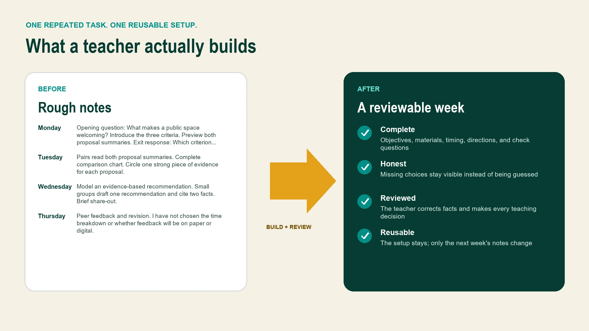

Creative problem solver · Brooklyn, New York
Bring me the thing that’s stuck.
I find the real problem, make the useful version, and help people move again.
Start with your situation
You do not need to know the job title.
01 Something exists, but it is not working Fix something. I diagnose the bottleneck and make one meaningful improvement. Explore Creative Rescue 02 The idea needs a useful form Build something. We turn an unclear concept into a practical thing people can use. Explore Build With Andrew 03 You need answers from New York City Find something out. I scout, verify, document, and return with useful options. Explore NYC Field Unit



For schools
Give teachers time back.
In one hands-on lab, teachers build a reusable AI assistant inside a tool the school already approves. No real student information. No coding. No prior AI experience.
See the Teacher Time Back Lab
Meet Andrew
Useful when the work crosses boundaries.
Andrew moves between creative direction, websites, music, campaigns, education programs, live events, and the systems that keep them working.
More about AndrewThe useful first step
Tell me what is not working.
You do not need a perfect brief. A few honest sentences are enough to start.
Start a conversation